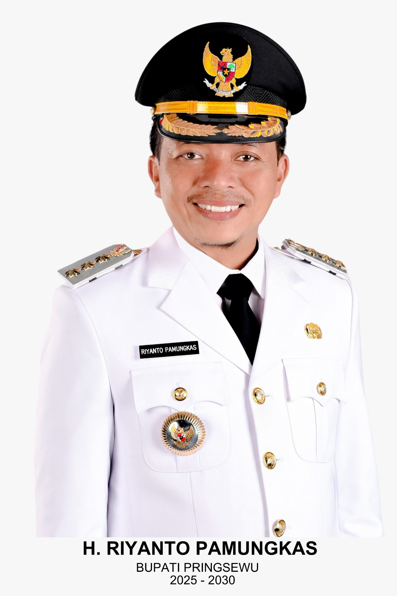
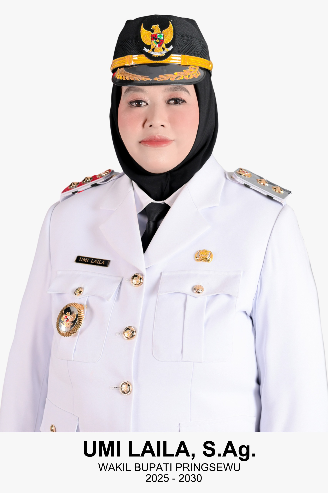

Pemerintah Kabupaten Pringsewu
Sistem Retribusi Sampah Pringsewu (SI-RESIK)
Portal Terpadu Retribusi Sampah
Satu pintu untuk
pengelolaan retribusi sampah di Kabupaten Pringsewu.
SI-RESIK menghubungkan DLH, petugas lapangan, dan warga dalam satu
sistem: pendataan wajib retribusi, penetapan tarif, pemetaan zona,
pembayaran online, hingga pengingat WhatsApp.
Dashboard Penerimaan
Pembayaran Non-Tunai
Integrasi Notifikasi WA
Prototype ini digunakan untuk kebutuhan
Innovation / Design Sprint Pringsewu 2025.
Pringsewu • Zona layanan sampah terintegrasi
Siapa yang menggunakan SI-RESIK?
Sistem ini dirancang untuk tiga kelompok utama pengguna.
Admin DLH & Pimpinan
Monitoring kebijakan & laporan
Melihat realisasi retribusi per kecamatan, zona angkut, tren
kepatuhan, serta piutang/tunggakan untuk bahan rekomendasi
kebijakan.
Petugas Lapangan / Loket
Operasional penagihan & pencatatan
Mengelola data wajib retribusi, mencetak/tagihan, mencatat
pembayaran tunai maupun non-tunai, dan mengirim pengingat.
Warga / Wajib Retribusi
Akses informasi tagihan & pembayaran
Melihat status tagihan, riwayat pembayaran, informasi zona
layanan, dan kanal pengaduan terkait pelayanan sampah.
Pimpinan Kabupaten Pringsewu
Dukungan kepemimpinan daerah untuk program
Pringsewu Bersih.

H. Riyanto Pamungkas
Bupati Kabupaten Pringsewu

Umi Laila, S.Ag
Wakil Bupati Kabupaten Pringsewu